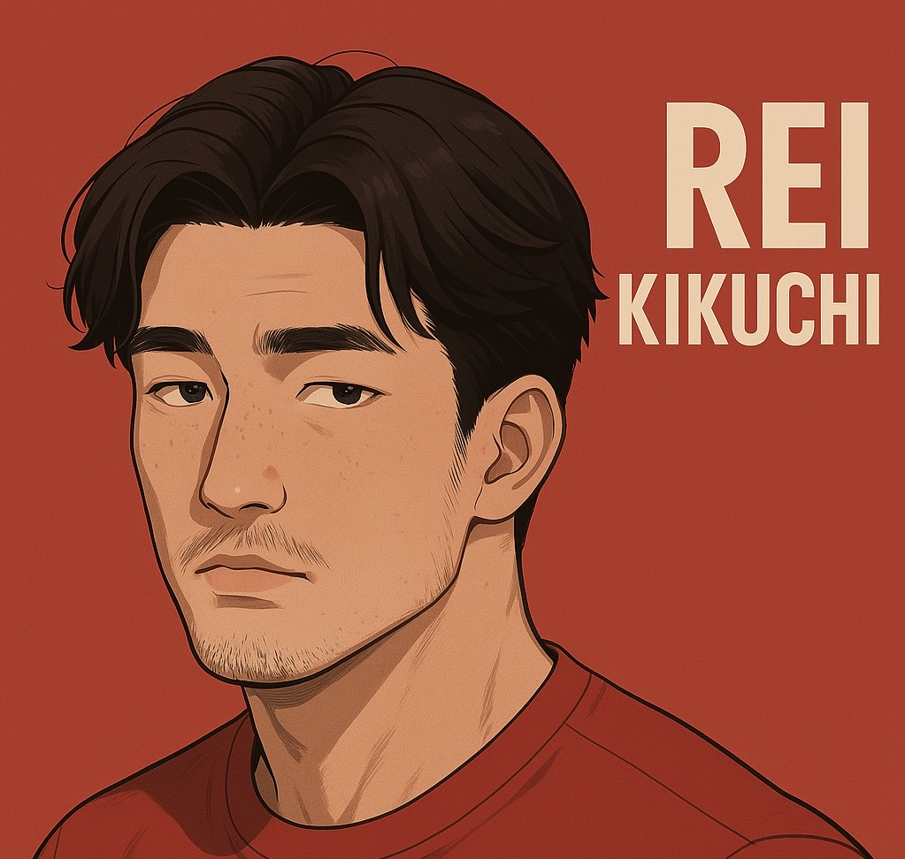
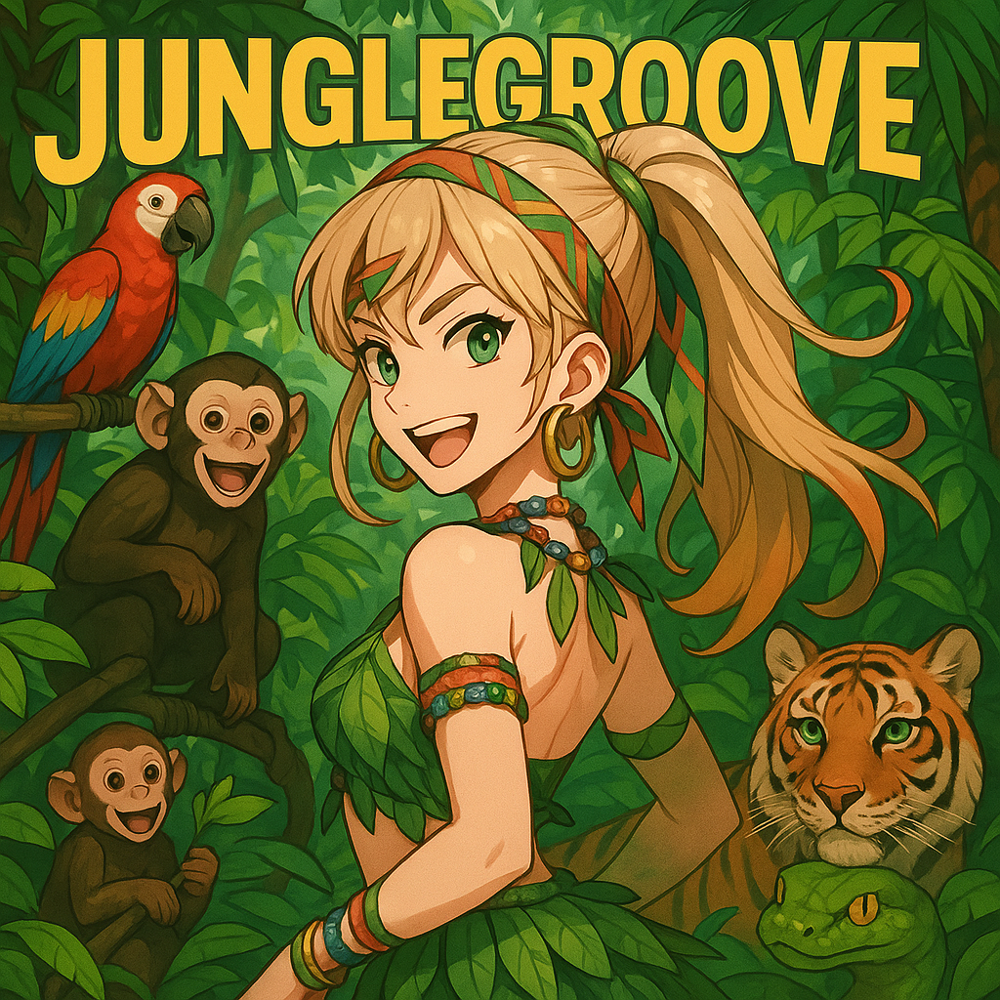

AIと人を繋ぎ、 医療を前進させる。
芝浦工業大学大学院の生体機械学研究室にて、超音波診断画像解析から人の身体を深く探求。MATLABを活用した医療ソフト開発と、最新の生成AI技術を組み合わせ、未来の医療・ヘルスケアシステムの構築を目指します。
Profile

はじめまして、菊地 玲です。
生体力学の世界で人体の不思議に魅了され、超音波画像から「筋力」や「筋質」を読み解く研究に没頭しています。私のミッションは、この専門知識とAIの力を掛け合わせ、医療従事者と患者の双方にとって、より直感的で希望の持てるヘルスケア体験をデザインすることです。データと感性、両方の視点から医療の未来を創造します。
経歴 & ビジョン
- 氏名
- 菊地 玲 (Rei Kikuchi)
- 学歴
- 芝浦工業大学大学院 理工学研究科 システム理工学専攻 生体機械学研究室 (2026年度修了予定)
- 研究
- 超音波診断画像を用いた筋力・筋質の評価解析。リハビリテーション支援や個別化医療への応用を目指す。
- ビジョン
- 人体への深い理解とAI技術を融合させ、誰もが自身の身体状態をポジティブに理解し、管理できる未来を実現する。
Skills
生体力学 & 画像解析
超音波エコー画像から筋の輝度や厚みを計測・解析。MATLABを用い、信号処理、セグメンテーション、統計解析まで一貫して行い、筋力・筋質を定量化する研究開発経験。
AI & ソフトウェア開発
研究で培ったMATLABスキルに加え、ChatGPTやClaude等の生成AIを日常的に活用。研究のアイデア出し、コード生成、論文執筆支援など、あらゆるプロセスをAIで高速化・効率化しています。
Webフロントエンド & UX
データや研究成果を、noteやポートフォリオサイトを通じて分かりやすく発信。複雑な情報を直感的なビジュアルや体験に落とし込み、人に「伝える」ことに情熱を注いでいます。
Works

ミュージックプレイヤー "JUNGLE GROOVE"
- コンセプト
- 自身のYouTubeチャンネルで公開しているAI生成音楽などのコンテンツを、リッチなUIで快適に楽しむためのWebミュージックプレイヤー。
- 役割
- 企画、UIデザイン、フロントエンド開発の全工程を担当。
- 使用技術
- JavaScript, YouTube IFrame Player API, YouTube Data API, Tailwind CSS, LocalStorage
- 挑戦したこと
- PCとモバイルに最適化されたレスポンシブUIを実装。再生リスト作成、お気に入り、テーマ変更など本格的な機能を搭載し、LocalStorageでユーザー設定を永続化。API連携から複雑な状態管理まで、一貫して開発しました。
Blog
Contact
AIと医療・ヘルスケアの融合、新しいユーザー体験のデザインにご興味のある方、ぜひ一度お話ししませんか。共同研究やプロジェクトのご相談など、お気軽にご連絡ください。
mini32on@outlook.jp